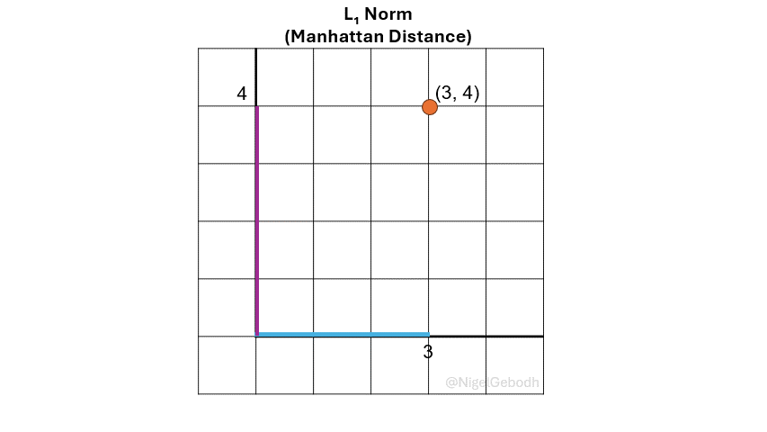
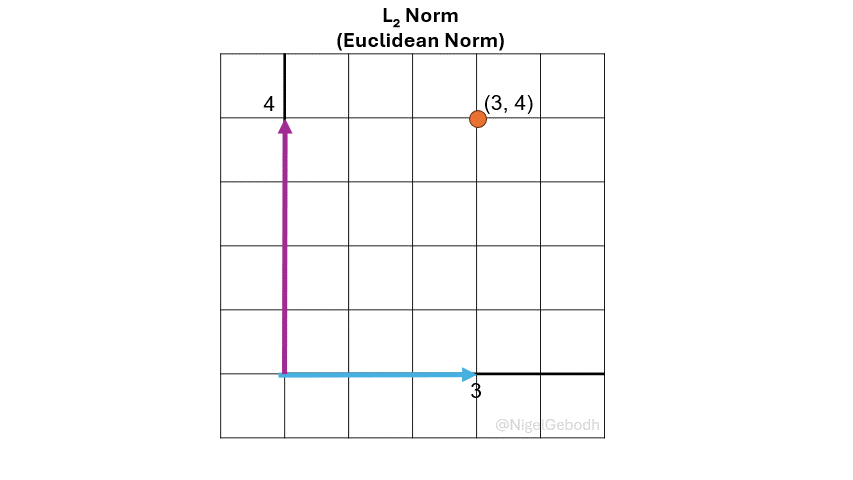

Understanding the basic application of norms in machine learning with Python examples
ML
Deep Learning
Linear Algebra
Math
Author
Nigel Gebodh
Published
July 30, 2024
Image by DALL-E 3
What exactly is a norm?
Norms are a fundamental concept in linear algebra and machine learning. Here we’ll look at some common norms used in machine learning and how they’re applied.
Norms are a class of mathematical operations used to quantify or measure the length or size of vector or matrix or distance between vectors or matrices.
Since norms measure lengths, distances, or magnitudes they are typically ≥ 0.
This is useful in machine learning in cases where you want to build models where you minimize errors/distances between predictions and ground truth.
How are norms applied in machine learning?
In machine learning norms are applied in:
Distance metrics:
Since norms measure lengths, distances, magnitudes they can be applied to measure the length of a vector or distances between vectors (\(d(u, v)\)). They are used in various algorithms that rely on datapoint distance calculations like k-Nearest Neighbor or k-Means Clustering.
Loss functions:
Since norms help in calculating distances and are widely adapted in error or loss calculations like the Mean Squared Error (MSE) and Mean Absolute Error (MAE).
Regularization:
Techniques like LASSO and Ridge regularization/regression apply the \(L_1\) and \(L_2\) norms to prevent model overfitting by inducing sparsity and reducing model weights.
Feature selection:
Norms like the \(L_1\) can help with feature selection by zeroing out unimportant features or creating a sparse solution (some elements in the solution are zero). Check out Dr. Steve Brunton’s explanation.
Common Norms in Machine Learning
L₁Norm (Manhattan Norm or Taxicab norm)
L₂Norm (Euclidean Norm or Magnitude)
𝐿∞ Norm (Max Norm or Chebyshev Norm)
Lₚ(0≤p<1) “Norm” (Not as common, but can show up)
Norm Notation
Norms are typically denoted with double vertical lines around a transformation being applied (here a \(\cdot\) is used as a space holder) and the norm type as a subscript on the outside (\(p\), where \(p\) can be \(p \geq 0, 1, 2, 3, ...,\infty\)). If \(p\) is not explicitly given, the norm is assumed to be \(p=2\) since it is the most commonly used norm. Norms can also be denoted with either a capital letter \(L\) or a lower case \(\ell\) with the letter 𝑝 as either a superscript (\(L^p\)) or subscript (\(L_p\)) . \[
L_p = \ell_p = \Vert \cdot \Vert_p
\]
Typical transformations can be:
Absolute value — \(|\mathbf{x}|\)
Squaring — \(|\mathbf{x}|^2\)
Min/Max operations — \(min(|\mathbf{x}|)\) or \(max(|\mathbf{x}|)\)
\(L_1\) Norm (Manhattan Norm)
The \(L_1\) norm or \(\ell_1\), also known as Manhattan norm or Taxicab norm, is defined as the sum of the absolute values of the vector components. It’s referred to as the Manhattan norm because distance is calculated in a gridwise format similar to the gridded blocks in Manhattan.
\(\textcolor{darkorange}{Note}\): A number to the power of 1 is just that number returned (i.e. \(3^1 = 3\), \(x^1 = x\)). Here the powers are added for demonstration and later generalization.

\(\cdot\) Example: \(L_1\) Norm
Example
1.\(L_1\) Example
Given a vector \(\mathbf{x} = [3,4]\), compute the \(\ell_\textcolor{red}1\) norm.
\(\textcolor{darkorange}{Note}\): Values raised to the power of a fraction are equivalent to the \(n^{th}\) root (i.e. \(x^\frac{1}{n} = \sqrt[n]{x}\) or \(25^\frac{1}{2} = \sqrt[2]{25} = 5\)). Here the powers are added for demonstration and later generalization.

\(\cdot\) Example: \(L_2\) Norm
Example
1.\(L_2\) Example
Given a vector \(\mathbf{x} = [3,4]\), compute the \(\ell_\textcolor{red}2\) norm
The \(L_\infty\) norm or \(\ell_\infty\), also known as the Max norm is defined as the maximum value of a vector. It is sometimes referred to as Chebyshev distance or Chebyshev norm. It is useful when the largest deviation is of interest like in outlier or anomaly detection.
Non-Negativity: Norms are non-negative values. It makes sense since they are computed to get the length or size of a vector or matrix. \[
||\mathbf{u}||_{p} \geq 0
\]
Definiteness: Norms are only 0 if the vector being measured is a zero vector (it has a length of 0).
\[
||\mathbf{u}||_{p} = 0 \quad only \quad if \quad \mathbf{u} = 0
\]
Triangle inequality: The norm of the sum of two vectors \(\mathbf{u}\) and \(\mathbf{v}\) (||𝐮+𝐯||) is not more than the sum of their norms (||𝐮|| + ||𝐯||). This is similar to the Pythagorean Theorem where \(||\mathbf{u}||\) and \(||\mathbf{v}||\) are the sides of a triangle and \(||\mathbf{u} + \mathbf{v} ||\) is the hypotenuse of the triangle. It is sometimes referred to as Minkowski’s Inequality. Mathematically this is: \[
||\mathbf{u} + \mathbf{v} ||_p \leq ||\mathbf{u} ||_p + ||\mathbf{v}||_p
\]
Homogeneity: If you multiply a vector \(\mathbf{u}\) by a scalar \(k\) and compute the norm its equivalent to multiplying the norm of the vector \(\mathbf{u}\) by the absolute value of that scalar \(k\):
import numpy as npx = np.array([3,4])p=4norm_p = np.sum(np.abs(x)**p)**(1/p)print_result(type_in=p, val=norm_p )
\(\displaystyle L_{4}-norm: 4.284572294953817\)
Other \(L_p\) “Norms”
What happens to norms when 0 ≤ p<1?
Well, we get a calculated length back, however these cases are not strictly norms (hence “norms”) since we get a violation of the triangle inequality (0<p<1) or homogeneity (p=0).
\(L_p\) for \(0<p<1\) Norm
What happens when \(p\) is between \(0\) and \(1\) (\(0<p<1\))?
In this case (\(0<p<1\)) the triangle inequality is violated. The means that, strictly speaking, \(L_{0<p<1}\) is not actually a norm but it still returns a measurement of size of a vector. The same generalized formula can be used:
The \(L_0\) “norm” is not actually a norm but sometimes mentioned in the context of norms. It violates the homogeneity rule above. When applied, the \(L_0\) “norm” counts the number of non-zero elements in a vector. This operation can be used to apply regularization, signal compression etc.
This means there are \(2\) non-zero elements in the vector \(\mathbf{x}\)
import numpy as npx = np.array([3,4,0])l0_norm = np.sum(x !=0)print_result(type_in=0, val=l0_norm)
\(\displaystyle L_{0}-norm: 2\)
Norms and Loss Functions
Loss functions are functions developed to help minimize the error between actual and predicted outcomes. Both the commonly used \(L_1\) and \(L_2\) norms are connected to some widely used loss functions or cost functions. Namely the computation of the Mean Absolute Error (MAE) and Mean Squared Error (MSE).
When norms are adapted as loss functions, one aspect that is important is that they are convex. This aids in convex optimization techniques like gradient descent. It allows these functions to converge to a global minimum. This means that:
Typically, norms adapted for loss functions are \(L_{p \geq 1}\) and are convex for all \(p \geq 1\).
Norms where \(0 \lt p \lt 1\) can be non-convex, making it unsuitable for convex optimization.
Comparing Convexity between \(L_{0.5}\), \(L_1\), and \(L_2\)
To compare the convexity between transformations within the \(L_{0.5}\), \(L_1\), and \(L_2\) norms, we can compute the derivatives of the functions used within each norm.
It’s important to note that all norms for \(p \geq 1\) are convex.
Norm
Function
First Derivative
Second Derivative
Convex/Non-Convex
\(L_{p=1}\)
\(|x|\)
\(1\) for \(x \gt 0\), \(-1\) for \(x \lt 0\), undefined at \(x = 0\)
\(0\) for \(x \neq 0\), undefined at \(x = 0\)
Convex
\(L_{p=2}\)
\(x^2\)
\(2x\)
\(2\)
Convex
\(L_{p=0.5}\)
\(x^{\frac{1}{2}}\)
\(\frac{1}{2}x^{\frac{-1}{2}}\)
\(\frac{-1}{4}x^{\frac{-3}{2}}\)
Non-Convex
What we see is:
The derivative of \(|x|\) is not defined at \(x = 0\), and its second derivative is \(0\) for all \(x \neq 0\). Regardless of this the function satisfies the triangle inequality and is considered convex.
The second derivative of \(x^2\) is always \(2\), which is non-negative, so \(x^2\) is convex.
The second derivative of \(x^{\frac{1}{2}}\) is negative for all \(x \geq 0\), so \(x^{\frac{1}{2}}\) is non-convex.
\(L_1\) and \(MAE\) Loss Function
In terms of loss functions, the Mean Absolute Error (MAE) is the averaged form of the \(L_1\) norm. Basically, to get from the \(L_1\)(\(||\mathbf{x}||_{p=1}\)) norm to the \(MAE\), you sum all the absolute values of the entries (\(\textcolor{purple}n\)) of a vector then divide by the number of entries (\(\textcolor{purple}{\frac{1}{n}}\)). In this case the vector \(\mathbf{x}\) is assumed to contain errors (i.e. the difference between \(y_{true}\) and \(y_{predicted}\) := \(\hat{y}\) := y-hat)
\[
or
\]\[
MAE = \textcolor{purple}{\frac{1}{2}}(\textcolor{steelblue}{|3| + |4|}) = \textcolor{purple}{\frac{1}{2}}(\textcolor{steelblue}{ 3 + 4}) = \textcolor{purple}{\frac{1}{2}}( \textcolor{steelblue}{7}) = 3.5
\]
import numpy as npx = np.array([3,4])MAE = (1/len(x))*np.sum(np.abs(x))print_result(type_in="MAE", val=MAE)
\(\displaystyle MAE: 3.5\)
\(L_2\) and \(MSE\) Loss Function
In terms of loss functions, the Mean Squared Error (MSE) is the averaged form of the \(L_2\) norm, squared (\(\frac{1}{n}||\mathbf{x}||_{p=2}^{2}\)). Basically, to get from the \(L_2\)(\(||\mathbf{x}||_{p=2}\)) norm to the \(MSE\), you square all the absolute values of the entries (\(\textcolor{purple}n\)) of a vector then sum them all up then divide by the number of entries (\(\textcolor{purple}{\frac{1}{n}}\)). In this case the vector \(\mathbf{x}\) is assumed to contain errors (i.e. the difference between \(y_{true}\) and \(y_{predicted}\) := \(\hat{y}\) := y-hat)
\(\textcolor{darkorange}{Note}\): The powers of \([...]^\frac{1}{2}\) and \([...]^2\) cancel each other out (\([...]^{\frac{1}{2} * 2}\)). Values raised to the power of a fraction are equivalent to the \(n^{th}\) root (i.e. \(x^\frac{1}{n} = \sqrt[n]{x}\) or \(25^\frac{1}{2} = \sqrt[2]{25} = 5\)). Here the powers are added for demonstration and later generalization.
\(\cdot\) Example: \(MSE\)
Example
Given a vector \(\mathbf{x} = [3,4]\) of errors compute the Mean Squared Error (MSE). What we know:
import numpy as npx = np.array([3,4])p=2MSE = (1/len(x))*np.sum(np.abs(x)**p)print_result(type_in="MSE", val=MSE)
\(\displaystyle MSE: 12.5\)
Norms and Regularization
In machine learning and statistics norms can be applied to penalize weights within models to prevent them from overfitting and to better generalize. These penalizations utilize norms including the \(L_1\) and \(L_2\) norms. Three of these commonly used regularization techniques are:
If we assume our loss function is the \(\textcolor{steelblue}{MSE}\) and apply a parameter (\(\textcolor{purple}{\lambda}\)) to tune the degree of regularization we want on our model’s parameters/weights (\(w\)), we get the following:
\(L_1\) Regularization or LASSO regression: \(L_1\) regularization forces weights within the model toward \(0\) and in some cases forces weights to be equal to \(0\). This can eliminate some features since their weights approach \(0\), creating weight based feature selection. \[
\begin{align*}
Loss & := \textcolor{steelblue}{MSE} + \textcolor{purple}\lambda \textcolor{red}{||\mathbf{w}||_{1}}\\
Loss & := \textcolor{steelblue}{MSE} + \textcolor{purple}\lambda \textcolor{red}{\sum_{j=1}^m |w_j|}\\
Loss & := \textcolor{steelblue}{\frac{1}{n} \sum_{i=1}^n {(y - \hat{y})}^2} +
\textcolor{purple}\lambda
\textcolor{red}{\sum_{j=1}^m |w_j|}\\
\end{align*}
\]
\(L_2\) Regularization or Ridge regression: \(L_2\) regularization similarly reduces the weights toward \(0\). In doing so the weights become scaled down and more evenly distributed. Note that we apply the squared \(L_2\) norm or \(||x||_{2}\) ⟶ \(||x||_{2}^{2}\) eliminating the square root in the \(L_2\) norm. \[
\begin{align*}
Loss & := \textcolor{steelblue}{MSE} + \textcolor{purple}\lambda \textcolor{red}{||\mathbf{w}||_{2}^{2}}\\
Loss & := \textcolor{steelblue}{MSE} + \textcolor{purple}\lambda \textcolor{red}{\sum_{j=1}^m |w_j|^2}\\
Loss & := \textcolor{steelblue}{\frac{1}{n} \sum_{i=1}^n {(y - \hat{y})}^2} +
\textcolor{purple}\lambda
\textcolor{red}{\sum_{j=1}^m |w_j|^2}\\
\end{align*}
\]
\(L_1\) + \(L_2\) Regularization or Elastic Net: Here we add the term \(\textcolor{PineGreen}{\alpha}\) and \(\textcolor{PineGreen}{(1 -\alpha)}\) to weight the application of either \(L_1\) or \(L_2\) penalization. The \(\textcolor{PineGreen}{\alpha}\) value is typically \(0 \lt \textcolor{PineGreen}{\alpha} \lt 1\). \[
\begin{align*}
Loss & := \textcolor{steelblue}{MSE} +
\textcolor{purple}\lambda
(
\textcolor{PineGreen}{\alpha} \textcolor{red}{||\mathbf{w}||_{1}} +
\textcolor{PineGreen}{(1- \alpha)}\textcolor{red}{||\mathbf{w}||_{2}^{2}}
)\\
\quad
Loss & := \textcolor{steelblue}{MSE} +
\textcolor{purple}\lambda
(
\textcolor{PineGreen}{\alpha} \textcolor{red}{\sum_{j=1}^m |w_j|} +
\textcolor{PineGreen}{(1- \alpha)}\textcolor{red}{\sum_{j=1}^m |w_j|^2}
)\\
\quad
Loss & := \textcolor{steelblue}{\frac{1}{n} \sum_{i=1}^n {(y - \hat{y})}^2} +
\textcolor{purple}\lambda
(
\textcolor{PineGreen}{\alpha} \textcolor{red}{\sum_{j=1}^m |w_j|} +
\textcolor{PineGreen}{(1- \alpha)}\textcolor{red}{\sum_{j=1}^m |w_j|^2}
)\\
\end{align*}
\]
Take Away
Norms play an important role in machine learning from distance calculations to regularization and error calculation. Understanding their properties and applications is essential for developing effective machine learning models and algorithms.
Cite as
@misc{Gebodh2024ABriefGuidetoVectorNormsinMachineLearning,
title = {A Brief Guide to Vector Norms in Machine Learning},
author = {Nigel Gebodh},
year = {2024},
url = {https://ngebodh.github.io/projects/Short_dive_posts/ML_reg_norm/ML_reg_norm.html},
note = {Published: July 30, 2024}
}